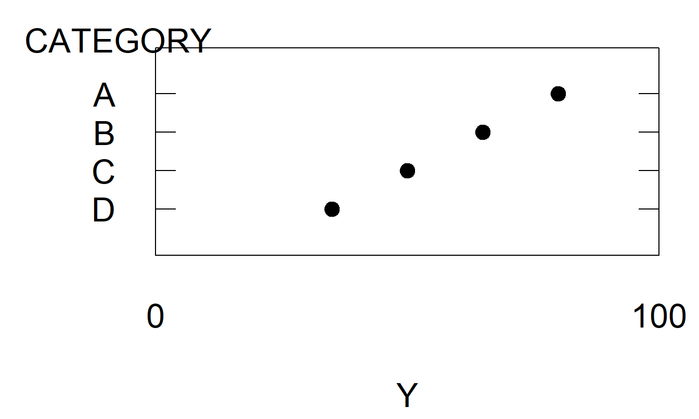
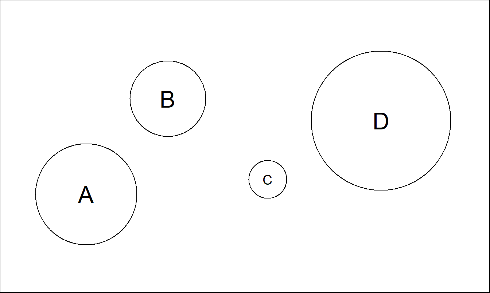

Chapter 21 Designing Effective Graphs
Chapter Preview.1 Actuaries, like other business professionals, communicate quantitative ideas graphically. Because the process of reading, or decoding, graphs is more complex than reading text, graphs are vulnerable to abuse. To underscore this vulnerability, we give several examples of commonly encountered graphs that mislead and hide information. To help creators design more effective graphs and to help viewers recognize misleading graphs, this chapter summarizes guidelines for designing graphs that show important numerical information. When designing graphs, creators should:
- Avoid chartjunk
- Use small multiples to promote comparisons and assess change
- Use complex graphs to portray complex patterns
- Relate graph size to information content
- Use graphical forms that promote comparisons
- Integrate graphs and text
- Demonstrate an important message
- Know the audience.
Some of these guidelines for designing effective graphs, such as (6), (7) and (8), are drawn directly from principles for effective writing. Others, such as guidelines (3), (4) and (5), come from cognitive psychology, the science of perception. Guidelines (1) and (2) have roots both in effective writing and in graphical perception. For example, the writing principle of brevity demonstrates how eliminating pseudo three-dimensional perspectives and other forms of chartjunk improve graphs. As another example, the writing principle of parallel structure suggests using small multiple variations of a basic graphical form to visualize complex relationships across different groups and over time.
To underscore the scientific aspect of graphical perception, we examine the process of communicating with a graph, beginning with a sender’s interpretation of data and ending with a receiver’s interpretation of the graph. In keeping with scientific tradition, this chapter discusses several studies in the literature on the effectiveness of graphs.
We conclude that the actuarial profession has many opportunities to improve its practice, making communication more efficient and precise.
21.1 Introduction
Like other business professionals, actuaries communicate ideas orally and in writing, as well as through presentations, which are interactive forms of communication that encompass oral and written messages. Actuaries, as well as other financial analysts, communicate ideas with important quantitative components. Writers express quantitative ideas as (1) numbers within paragraphs, (2) numbers within tabular forms, (3) functional relationships such as equations, and (4) data or equations as graphs.
Graphs are a simple yet powerful medium for written communication of quantitative ideas. Graphs can present a large amount of data in a small space, express important relationships between quantities, compare different sets of data, and describe data, thus providing a coherent picture of complex systems. Graphs do more than merely state an idea; they demonstrate it.
Graphs are powerful because they are flexible, but flexibility can be a disadvantage because of the potential for abuse. Well-accepted references dealing with methods of quantitative data presentation mitigate opportunities for abuse. The Chicago Manual of Style (1993), a standard reference, discusses presentation of in-text data, and Ehrenberg (1977) and Tufte (1983) discuss presentation of tabular data. In contrast, we focus on data presentation through graphical displays.
This chapter seeks to improve actuarial practice as it relates to graphical displays. We intend to: (1) demonstrate the importance of graphical displays, (2) provide guidelines to improve graphical practice, and (3) introduce some of the scientific underpinnings of good graphical practice. The agenda is ambitious, yet the goal of this chapter is to provide practicing actuaries with basic tools that they can use to become critical consumers and effective producers of graphs. We also hope that readers will adopt our enthusiasm and wish to explore the graphical design literature on their own.
An important theme of this chapter is that principles of vigorous writing can and should be applied to the practice of making effective graphs. The Elements of Style (Strunk and White 1979, p. xiv) summarizes vigorous writing:
Vigorous writing is concise. A sentence should contain no unnecessary words, a paragraph no unnecessary sentences, for the same reason that a drawing should have no unnecessary lines and a machine no unnecessary parts. This requires not that the writer make all his sentences short, or that he avoid all detail and treat his subjects only in outline, but that every word tell.
White attributes this quotation to William Strunk. White calls it “a short, valuable essay on the nature and beauty of brevity – sixty-three words that could change the world.” We argue that brevity is especially important when making effective graphs. This was also understood by Strunk; as noted above, he said “a drawing should contain no unnecessary lines …” We use the term chartjunk, introduced by Tufte (1983), for any unnecessary appendage in a graph.
Vigorous writing principles other than brevity also apply to the practice of making effective graphs. Just as with writing, effective graphs are the result of repeated revising and editing. Poorly designed graphs can and do hide information and mislead. Fancy or pretentious graphs are distracting when simpler graphs suffice.
Although the principles of effective writing are valuable, they are not sufficient for producing effective graphs. Writing is processed in a serial manner, word by word, sentence by sentence, with a beginning and an ending. The process of “reading,” or decoding, a graph is nonlinear and more complex. The additional complexities mean that even authors who follow effective writing practices may produce ineffective graphs. Often the form of written prose is the sole determinant of its value, whereas in graphics the communication process plays the dominant role. We assume that readers are familiar with effective writing forms. Thus, we first review the communication process in which a graph plays a crucial role.
To underscore the importance of effective graphical design, Section 21.2 provides several illustrations of graphs that hide information and are misleading; the defects illustrated are more serious drawbacks than mere chartjunk. The Section 21.2 illustrations motivate the need for additional guidelines and methods for constructing effective graphs.
Section 21.3 introduces eight important guidelines for creating and viewing graphs. Although the guidelines do not provide a panacea for all graphical defects, they do provide business professionals such as actuaries with a key checklist for creating effective graphs. The guidelines are organized so that the first two, on chartjunk and the use of multiples, are based on both effective writing and graphical perception perspectives. Guidelines Three, Four and Five are related primarily to the graphical perception literature, whereas Guidelines Six, Seven and Eight are based primarily on effective writing principles.
As with effective writing, questions of style enter into the discussion of what is and what is not an effective graph. Many style decisions are based upon accepted practices without a firm scientific foundation. However, the process of perceiving graphs has been the subject of inquiry in several scientific disciplines, including psychophysics, cognitive psychology, and computational visions (Cleveland 1995, Chapter 4). Section 21.4 illustrates some types of experimental evidence for determining an effective graphical form based on both the receiver and the graph itself as units of study. Section 21.4 also illustrates how such mainstays of business publications as bar charts and pie charts are poor communicators of numerical information.
Sections 21.5 and 21.6 contain concluding remarks and descriptions of some resources for actuaries who wish to learn more about designing effective graphs.
Most readers are removed from the detailed data summarized by a graph. Several difficulties and misconceptions can arise owing to the distance between the original data and a viewer’s interpretation of the graph. Figure 21.1 illustrates the challenge of communicating with a graph. The sender (and creator) of the graph has a message derived from an interpretation of data. Although a few graphs communicate raw data, the primary purpose of most graphs is to communicate the sender’s interpretation. The message the sender intends is encoded in a graph and passed on to the receiver.
Figure 21.1: Flow Chart of the Process of Communicating with a Graph. The graph is a crucial intermediary in the process of communicating data interpretation to the receiver.
In general, the receiver is party to neither the exact interpretation intended by the sender nor the raw data. Thus the receiver must decode the graph and develop an interpretation of its message. Two issues arise:
- Whether the interpretation constructed by the receiver is congruent to the interpretation of the sender
- Whether the receiver’s interpretation is consistent with and supported by the data.
The first issue depends on the skill with which the sender constructs the graph and the skill with which the receiver decodes it. A poorly constructed graph can hide or distort the sender’s message. A graph that is hard to read can discourage the receiver from spending the time necessary to decode the message correctly. The receiver can ignore or misinterpret a graph that is not constructed with care.
The second issue depends not only on the skills mentioned above but also on the skill with which the sender draws meaning from the data. How carefully does the sender document the process of interpretation? Is this communicated to the receiver? Is the receiver capable of assessing the extent to which the graph is a credible summary of the data? Failure at any of these points could result in the receiver ignoring or misinterpreting the graph.
This chapter assumes that the graphs included in business communications are the subject of scrutiny by serious readers. Graphs that appear quickly on the television screen, a flip chart or presentation package are designed to attract attention and to entertain the viewer. Design, rather than information, considerations dominate these media. We focus instead on graphs that are part of professional writing and are designed to inform. As with effective writing, we assume that in creating graphs “one must believe - in the truth and worth of the scrawl, in the ability of the reader to receive and decode the message” (Strunk and White 1979, p. 84). We now turn to examples of graphs that mislead.
21.2 Graphic Design Choices Make a Difference
As noted by Schmid (1992), the ancient proverb “One picture is worth ten thousand words,” when applied to graphs might well read, “One picture can be worth ten thousand words or figures.” Graphic potential is not easily realized. Because of their flexibility, graphs too easily render visual displays of quantitative information that are uninformative, confusing or even misleading.
Examples 21.2.1 through 21.2.5 illustrate five different types of deceptive graphs. In each case, the data were not altered nor were different dimensions of the data portrayed. The common theme of the examples is that, by altering only the data scales, the creator can alter dramatically a viewer’s interpretation.
Example 21.2.1: Including Zero To Compress Data2. Figure 21.2 shows a time series of the percentage of full-time equivalent workers employed in the insurance industry. The annual data, 1948-1993, are from the National Income and Product Accounts produced by the Bureau of Labor Statistics. The left-hand panel, Figure 21.2(a), provides the impression of a stable employment environment for the insurance industry. Including zero on the vertical axis produces this seeming stability. By doing this, most of the graph is devoted to white space that does not show the variability in the data. In contrast, the right-hand panel, Figure 21.2(b), uses the data to set the range on the axes. This panel clearly shows the large employment increases in the years following the Korean War, circa 1952. It also allows the reader to see the employment declines that the insurance industry has suffered in the most recent three years.

Figure 21.2: Annual Insurance Employees, 1948-1993. ‘Insurance employees’ is the percentage of full-time equivalent employees who are working for insurance carriers. Allowing the data to determine the scale ranges reveals interesting aspects of the data.
R Code to Produce Figure 21.2
This example is similar to a popular illustration from Huff’s well-known How to Lie with Statistics (Huff 1954). The point is that motivation external to the data, such as including zero on an axis, can invite us to alter the data scale and change a viewer’s interpretation of the data. As Example 21.2.2 shows, creators of graphs can also alter a viewer’s interpretation by changing both scales of a two-dimensional graph.
Example 21.2.2: Perception of Correlation. Figure 21.3 relates risk management cost effectiveness to firm size. These data are from a survey of 73 risk managers of large, U.S.-based, international firms that was originally reported in Schmit and Roth (1990). The data are analyzed in Section 6.5. Here, the measure of risk management cost effectiveness, firm cost, is defined to be the logarithm of the firm’s total property and casualty premiums and uninsured losses as a percentage of total assets. The firm size measure is total assets in logarithmic units.
Figure 21.3: Cost Effectiveness of a Firm’s Risk Management Practices Versus Firm Size. The data represented in each figure are the same. However, the wider scales in panel (b) suggest that the data are more highly correlated.
R Code to Produce Figure 21.3
The left-hand panel, Figure 21.3(a), shows a negative relationship between firm costs and firm size, as anticipated by Schmit and Roth. The correlation coefficient between the two variables is -0.64. The data are in a small center portion of Figure 21.3(b) when compared to the left-hand panel, Figure 21.3(a). Figure 21.3(a) uses the data to determine the axes and thus shows more patterns in the data. As Cleveland, Diaconis, and McGill (1982) show, the scaling makes the data in the right-hand panel appear more correlated than in the left-hand panel.
Change of scales can also alter the viewer’s perception of trend in time series data, as illustrated in Example 21.2.3.
Example 21.2.3: Transforming to a Logarithmic Scale. Figure 21.4 exhibits a time series of the U.S. credit insurance market over 1950-1989. These data are analyzed in Frees (1996) and are originally from the Life Insurance Fact Book (1990). When the amount of insurance is examined on a linear scale in Figure 21.4(a), the credit insurance market appears to be expanding rapidly. However, Figure 21.4(b) shows that, when examined on a logarithmic scale, the market is leveling off. As discussed in Section 3.2.2, changes on a logarithmic scale can be interpreted as proportional changes. Thus, Figure 21.4(a) shows the market is increasing rapidly, and Figure 21.4(b) shows that the rate of increase is leveling off. These messages are not contradictory, but viewers must interpret each graph critically to understand the intended message.
Figure 21.4: Annual U.S. Credit Life Insurance in Force, 1950-1989. Different vertical scales give different impressions of the rate of growth over time.
R Code to Produce Figure 21.4
Example 21.2.4: Double Y-Axes. Figure 21.5 displays two measures of inflation that are produced by the Bureau of Labor Statistics. On the left-hand axes are CPI_U, the consumer price index for urban consumers. On the right-hand axes are CPI_M, the consumer price index for medical components of the overall index. Each series consists of monthly values ranging from January 1947 through April 1995.
Figure 21.5: Monthly Values of the Overall Consumer Price Index (CPI) and the Medical Component of the CPI, January 1947 through April 1995. Different scale ranges alter the appearances of relative growth of the two series.
R Code to Produce Figure 21.5
The left-hand panel, Figure 21.5(a), suggests that the CPI_U and the CPI_M begin and end in approximately the same position, thus implying that they have increased at about the same rate over the period. The creator could argue that each index measures the value of a standard bundle of goods, thus justifying the argument for using a different scale for each series.
The right-hand panel, Figure 21.5(b), provides a more useful representation of the data by using the same scale for each series. Here, CPI_M begins lower than CPI_U and ends higher. That is, the medical component index has increased more quickly than the index of prices for urban consumers. Other patterns are also evident in Figure 21.5: each series increased at roughly the same rate over 1979-1983 and CPI_M increased much more quickly from 1983 to 1994 when compared to 1948-1979.
Example 21.2.5: Aspect Ratio. Figure 21.6 shows a time series plot of the monthly unemployment rate, April 1953 through December 1992. The unemployment rate is the percentage of unemployed civilian labor force, seasonally adjusted. It is part of the Household Survey produced by the Bureau of Labor Statistics, Department of Labor. This series was analyzed in Frees et al. (1997). The top panel of Figure 21.6 shows that the unemployment rate averaged 5.9% with a peak of 10.8% in the fourth quarter of 1982 and a minimum of 2.7% in the third quarter of 1953.
Figure 21.6: Time Series Plot of Quarterly Values of the U.S. Unemployment Rate, 1953-1992. The lower panel displays a feature that is not evident in the upper panel; unemployment declines more slowly than it rises.
R Code to Produce Figure 21.6
The two panels in Figure 21.6 differ only in their shape, not in the scaling of either variable or in the relative amount of space that the data take within the figure frame. To differentiate these two shapes, we can use the concept of a figure’s aspect ratio, defined to be the height of the data frame divided by its width (some sources use the reciprocal of this value for the aspect ratio). The data frame is simply a rectangle whose height and width just allow the graph of the data to fit inside. To illustrate, in the upper panel in Figure 21.6, the length of the vertical side is equal to the length of the horizontal side. In the lower panel, the vertical side is only 25% of the horizontal side.
Both panels show that the unemployment series oscillated widely over this 39-year period. The lower panel, however, displays a feature that is not apparent in the upper panel; the rise to the peak of an unemployment cycle is steeper than the descent from the peak. Within each unemployment cycle, the percentage of workers unemployed tends to rise quickly to a maximum and then to fall gradually to a minimum. This behavior is surprisingly regular over the almost 39-year period displayed in the plot.
Different aspect ratios can leave substantially different impressions on the eye, as Figure 21.6 illustrates. Thus, the aspect ratio can be chosen to emphasize different features of the data.
21.3 Design Guidelines
Understanding the issues illustrated in Section 21.2 can help actuaries and other business professionals create and interpret graphs. This section presents eight guidelines for designing effective graphs. One of our main points is that current practice is not in accord with these guidelines. Thus, we anticipate that not all of our readers will find the demonstrations of the guidelines visually appealing, but, as stated in Section 21.1, many of the guidelines are based on a scientific foundation outlined in Section 21.4. “Intuition” is something we learn and cultivate; progress in science does not always conform to current intuition. It was widely believed at one time that the earth was flat and that the sun revolved about the earth. The demonstrations of this section may or may not be immediately intuitive, but they are logical conclusions from the design guidelines advocated here.
Guideline One: Avoid Chartjunk
In Section 21.1, we defined chartjunk to be any unnecessary appendage in a graph. Creators of graphs who use chartjunk lower their credibility with serious receivers. Even when senders convey a correct interpretation accompanied by chartjunk, they ask receivers to process and properly ignore the chartjunk. If chartjunk is part of the default, or easily used, options of a software package, then the sender can clutter a graph, or even make a graph misleading, simply by punching a button.
Senders who avoid chartjunk raise their credibility. They ask receivers to look only at meaningful characters and marks. Senders may have to spend considerable time with their software to make effective graphs, but the respect and attention of their receivers reward them. Another way to avoid chartjunk is not to use a graph at all if a few words will do. If the message in a graph can be summarized in a few words, then the graph is not needed. Avoid pictures that are not worth ten thousand words!
Avoiding chartjunk is based in part on the concept of brevity in vigorous writing principles. From the graphical perception viewpoint, avoiding chartjunk reduces the noise when communicating between the graph’s sender and receiver. Thus, this guideline is important because it has roots in both writing and perception principles.
Example 21.3.1: Premium Receipts of Life Insurance Companies. Figure 21.7(a) is an adaptation of a graph on page 69 of the Life Insurance Fact Book (1994). The graph reports 15 bits of information: 5 years and 2 percentages for each year (a third percentage is found by subtraction). A three-dimensional box represents each percentage, and each box displays different shadings to represent the three lines of business: health, annuity and life. These figures could be reported compactly in a small table. However, granting that a graph may help the receiver appreciate trends in the figures, the graph’s simplicity should reflect the simplicity of the information available in the figures. In particular, a small plotting symbol suffices to report a percentage. A three-dimensional, shaded box is hardly called for. It is interesting that the three-dimensional box was an “innovation” in 1994. Earlier editions of the Fact Book used two-dimensional boxes. The volume of chartjunk took a big jump in 1994.
Figure 21.7: Distribution of Premium Receipts, 1973-1993. The excessive chartjunk of (a) hides the large change in distribution types between 1983 and 1988.
R Code to Produce Figure 21.7
Figure 21.7(b) is a dot plot, discussed by Cleveland (1994). Different plotting symbols show the different lines of business. The tick marks on the lower horizontal axes help us estimate the percentages, and the light, dotted grid lines help us scan across the graph to the plotting symbols of interest. The major shifts, and the approximate magnitudes of the shifts, that happened between 1983 and 1988 are clear here.
Guideline Two: Use Small Multiples to Promote Comparisons and Assess Change
Statistical thinking is directed towards comparing measurements of different entities and assessing the change of a measurement over time or some other unit of measurement. Graphical displays are inherently limited when portraying comparisons or assessing changes because they are static, two-dimensional media. Graphs that contain multiple versions of a basic graphical form, each version portraying a variation of the basic theme, promote comparisons and assessments of change. By repeating a basic graphical form, we promote the process of communication.
Tufte (1997) states that using small multiples in graphical displays achieves the same desirable effects as using parallel structure in writing. Parallel structure in writing is successful because it allows readers to identify a sentence relationship only once and then focus on the meaning of each individual sentence element, such as a word, phrase or clause. Parallel structure helps achieve economy of expression and draw together related ideas for comparison and contrast. Similarly, small multiples in graphs allow us to visualize complex relationships across different groups and over time.
The Section 21.2 figures illustrated the use of small multiples. In each figure, the two plots portrayed were identical except for the change in scale; this use of parallel structure allowed us to demonstrate the importance of scaling when interpreting graphs. Example 21.3.2 illustrates another application of small multiples in graphical displays, Cleveland’s (1993) multiway dot plot.
Example 21.3.2: Relative Importance of Risk Source. Figure 21.8, called a multiway dot plot, demonstrates conclusions reached by using a model introduced in Frees (1998) concerning the relative importance of risk sources within a block of short-term insurance contracts. The risk sources are the stochastic interest environment, the frequency of claims (mortality), and the possibility of a catastrophic event (disaster) occurring. The relative importance of these three risk sources is considered by letting two parameters of interest vary. These parameters are the expected year until disaster and, in the event of disaster, the expected proportion (probability) of policyholders that will succumb to disaster.
Figure 21.8: The Relative Importance of Risk Sources. This complex graph allows us to visualize differences over sources of risk (interest, disaster and mortality), expected year until disaster, and probability of disaster. The multiway dot plot demonstrates how quickly the importance of the disaster component increases as the probability of disaster increases.
R Code to Produce Figure 21.8
Figure 21.8 shows that when no policyholders succumb to disaster (\(q = 0\)), then the frequency component, mortality, dominates the other risk sources. At the opposite extreme, when all policyholders succumb to disaster (\(q = 1\)), then the disaster component dominates the other risk factors. This is true even when the expected time until disaster is 500 years! For the intermediate cases, when either the expected proportion of policyholders succumbing to disaster increases or the expected year until disaster decreases, the importance of the disaster component increases at the expense of the mortality component. Because of the short-term nature of the contract considered, the interest component does not play an important role in Figure 21.8.
This story of relative importance could not be told using analytic expressions because of the complexity of the underlying models. The story behind Figure 21.8 could be told, however, using tabular displays. The advantage of Figure 21.8 is that it allows the viewer to make comparisons over three different risk sources when two parameters of interest vary. Although such comparisons are possible with tabular displays, graphical displays are more effective devices.
Guideline Three: Use Complex Graphs to Portray Complex Patterns
Many authors believe that a graph should be simple and immediately understood by the viewer. Simple graphs are desirable because they can deliver their message to a broad audience and can be shown quickly and digested immediately. Although this notion may be appropriate for popular writing, for professional writing the concept of instant understanding is limiting in that it precludes the notion that graphs demonstrate complex ideas. Complex patterns should be portrayed as simply as possible, although the patterns themselves should not be unnecessarily simplified.
One way for a graph to represent complex patterns is for some of its basic elements to serve more than one purpose. Tufte (1983) called such elements multifunctioning. For example, we can use plotting symbols to represent not only elements corresponding to the horizontal and vertical scales but also a level of a categorical variable.
Example 21.3.3: Frequency and Severity of Hospital Costs. Figure 21.9 displays the relationship between average hospital costs and frequency of hospital usage. These data for the year 1989 were obtained from the Office of Health Care Information, Wisconsin’s Department of Health and Human Services, and are further analyzed in Section 4.4. The data represent averages over the state of Wisconsin, broken down by nine health service areas, three types of providers (fee for service, health maintenance organization, and other) and three types of diagnosis-related groups (DRGs). The three DRGs, numbers 209, 391 and 430, represent major joint and limb reattachment, normal newborns, and psychoses, respectively. Each plotting symbol in Figure 21.9 represents a combination of health service area, type of payer, and type of DRG. The horizontal axis provides the number of patients admitted in 1989 for each combination, in natural logarithmic units. The vertical scale provides the average hospital cost per discharge for each combination, in natural logarithmic units.
The story in the left-hand panel, Figure 21.9(a), is one of increased economies of scale. That is, combinations of health service areas, type of payer, and DRG that have a larger number of patients, measured by discharges, have lower costs. A substantial negative relationship is evident in Figure 21.9(a); the correlation coefficient is -0.43. This is true despite the aberrant point in the lower left-hand region of Figure 21.9(a). The aberrant point is less important economically than the others; it represents a combination with only two discharges. When the point is removed, the correlation becomes -0.50, thus representing an even stronger negative relationship.
Figure 21.9: Logarithmic Cost per Discharge Versus the Logarithmic Number of Discharges. By adding a plotting symbol code for the level of DRG, the three distinct groups are evident. The three DRGs, 209, 391, and 430, represent major joint and limb reattachment, normal newborns and psychoses, respectively.
R Code to Produce Figure 21.9
Despite its simplicity, Figure 21.9(a) hides an important relationship. The right-hand panel, Figure 21.9(b), is a redrawing of Figure 21.9(a) that includes different plotting symbols for different DRGs. Here, the story is the opposite to the one of increased economies of scale. For combinations representing major joint and limb reattachments and normal newborns, the relationship between frequency and cost is fairly flat. For these DRGs there are few economies of scale. For the psychoses DRG, number 430, Figure 21.9(b) shows a small positive relationship between frequency and cost, even discounting for the combination with only two patients discharged.
The two panels illustrate a phenomenon in statistics referred to as Simpson’s paradox, or a problem of aggregation of data. See Section 4.4 for further discussion. The important point for this chapter is that sometimes simple graphs are misleading. Complex graphs may take more time for viewers to interpret, but they more effectively summarize complex relationships.
Guideline Four: Relate Graph Size to Information Content
“How large should the graph be?” is an important question. The bounds on size are clear. Graphs should not be so small that they are not clearly legible, particularly upon reproduction that degrades an image, nor should they be so large that they exceed a page. With large graphs, it is difficult to compare elements within the graph, thus defeating a primary purpose of graphs.
Within these bounds, a graph should be proportional to the amount of information that it contains. To discuss the proportion of information content, Tufte (1983) introduced the data density of a graph. This is defined to be the number of data entries per unit area of the graph. For comparing graph size and information, the data density is a quantity to be maximized, either by increasing the number of data entries or reducing the size of the graph. By examining this density over a number of popular publications, Tufte concluded that most graphs could be effectively shrunk.
For example, Figure 21.7(a) is a chart with a low data density. This chart represents only 15 numbers. With an area of approximately 9 square inches, this graph’s data density is roughly 15/9. For comparison, Figure 21.10 shows approximately 600 numbers. Although Figure 21.10’s area is about twice as large as that of Figure 21.7(a), the data density is much larger in Figure 21.10 than in Figure 21.7(a).
Figure 21.10: Comparison of Stochastic Prediction Intervals to Held-out Actual Experience and to Social Security’s Assumptions. The thin solid lines represent actual inflation rates, and the thick solid lines represent projections by Social Security experts. The dotted lines represent prediction intervals generated by a stochastic time series model. This complex graph allows viewers to make comparisons based on approximately 600 points.
R Code to Produce Figure 21.10
Example 21.3.4: Inflation Rate Forecasts. Figure 21.10 is a complex graph that contains much information about a complex subject, forecasting the inflation rate (CPI) for projections of Social Security funds (Frees et al. 1997). The graph shows actual experience of quarterly inflation rates up through the first quarter of 1995. Experience up through 1992 was used to fit a time series model described in Frees et al. (1997), and this model was used to generate prediction intervals (PIs) of the inflation rate. These prediction intervals can be compared to held-out experience that was not used to fit the model (1993-1995) as well as projections of inflation by Social Security experts. The thick lines represent high-, intermediate-, and low-cost inflation projections determined by Social Security experts.
Figure 21.10 is complex and may not be immediately understood by the viewer. However, almost every stroke within the data region represents numerical information. Although complex, Figure 21.10 allows the viewer to compare (1) 20 years of experience to a 10-year forecast, (2) recent held-out experience to forecasts, and (3) expert projections to forecasts generated by a time series model. The graph’s complexity reflects the complexity of forecasting inflation rates; this complexity is not due to unnecessary elements that distract viewers and make them more “interested” in the graph.
Guideline Five: Use Graphical Forms That Promote Comparisons
Creators of graphs are often faced with the choice of several graphical forms that could be used to represent a feature of the data. As we describe in Guideline Eight, the receiver’s knowledge of graphical forms can influence the choice. Graphical perception is also an important determinant. In Section 21.4, we discuss this issue in detail. We include it here as part of the Guidelines Section for completeness.
Guideline Six: Integrate Graphs and Text
Data graphics should be carefully integrated with text, tables, and other graphs. A legend summarizes the graph and its main message, but the surrounding text develops the theme leading up to the message and discusses its impact. Although “a picture is worth ten thousand words,” a graph needs supporting text. Tufte (1983) encourages readers and writers to think of data graphics as paragraphs and to treat them as such.
Data graphics can be complemented by a tabular presentation of data: graphics can highlight relationships among the data, and tables can present precise numerical descriptions of the data. The two modes are complementary. A good writing device is to place a graphical display in the main body of the report and to reinforce the graph with a tabular display in an appendix.
The American Statistical Association, in its Style Guide for journal publications, reminds us that a detailed legend is helpful when interpreting graphs. The Style Guide recommends that a legend describe a graph, draw attention to the graph’s important features, and explain this importance.
Guideline Seven: Demonstrate an Important Message
Detailed legends and graphs should reinforce messages that are developed in the main body of the text. To illustrate, when considering ways of portraying a complex dataset, choose a graphical form that highlights an important message. All too often, creators of graphs display data features that are not part of the theme that is being developed.
Cleveland (1994) recommends that we “put major conclusions in a graphical form.” In regression data analysis, major conclusions are about patterns in the data that are summarized using models. Usually major conclusions are best presented graphically. Graphs display a large amount of information that is retained by the viewer because it is visualized. Graphs communicate patterns directly to a viewer, without using an equation to represent the patterns. In this way, a wider audience can be reached than if the presentation relies solely on a model-based interpretation of the data. Further, patterns suggested by a graph reinforce those represented by a model, and vice versa. Thus the two tools, graphs and models, reinforce and strengthen one another.
Tukey (1977) states that “The greatest value of a picture is when it forces us to notice what we never expected to see.” Unexpected phenomena are usually memorable events; viewers of graphs remember these results, which makes them powerful. In writing this chapter, we did not expect the results of Figure 21.6. This figure demonstrates that unemployment rises much more quickly than it declines; it is a powerful example of the use of aspect ratios.
Guideline Eight: Know Your Audience
A basic precept of effective writing, familiarity with one’s audience, is also valid for designing effective graphs. As stated in the Introduction, our primary motivation in developing guidelines is to encourage the precise and concise communication of quantitative ideas to a scientific audience using a written medium. As discussed in Section 21.4, the graphical form is subservient to the real role of the graphical display, communicating quantitative ideas of the creator to the viewer of a graph. If the audience does not have an understanding of the graphical form, then the form will hinder the communication flow rather than aid it. Thus, each of the seven guidelines already discussed can be modified or even ignored upon occasion, depending on the audience for the graph. To illustrate, in Example 21.3.1 we argued that the dot plot was superior to the three-dimensional stacked bar chart. As another example, in Section 21.4 we argue that pie charts are ineffective communicators of information based on the science of cognitive perception. However, for some audiences, creators of graphs will prefer the less effective forms based on the level of audience familiarity. We hope that practice will eventually shift from these ineffective modes of communication. Still, it is important to recognize the background of the audience of the graph. We recommend that creators of graphs not so much swim against the tide of poor graphic design as bend their course towards more effective modes of communication.
21.4 Empirical Foundations For Guidelines
This section consists of two different scientific aspects of graphical studies: science of perception and surveys of graphical practice.
This chapter does not include a number of graphical forms that are mainstays in business publications and the popular press, such as pie charts, pictographs, and stacked bar charts. In fact, we have shown stacked bar charts in Section 21.3 only as an example of how not to draw figures. Why are these widely used graphical forms not adopted in an chapter emphasizing data graphics? The reasons lie in how graphical forms communicate information and how we perceive graphical information. We demonstrate that, given how we perceive information, pie and stacked bar charts are poor communicators of numerical information.
As described in Section 21.1, data graphics encode information, and we, as viewers, decode this information when viewing a graph. The efficiency of this transmission can be considered in the context of cognitive psychology, the science of perception. This discipline provides a framework for distinguishing among different types of information processing that we do when decoding graphs. Identifying different types of information processing will help us decide what are effective, and ineffective, graphical forms.
Table 21.1 is an ordered list of basic graphical perception tasks, according to Cleveland (1994). Here, the ordering begins with a set of tasks that is least difficult for a viewer to perform and ends with a set that is most difficult. Thus, for example, judging position along a common scale is the least difficult for viewers and judging relative shadings of colors and density (the amount of ink) is the most difficult.
Table 21.1. Basic Graphical Perception Tasks
\[ \small{ \begin{array}{l}\hline \text{1. Position along a common scale} \\ \text{2. Position along identical, nonaligned scales} \\ \text{3. Length} \\ \text{4. Angles and slopes} \\ \text{5. Area} \\ \text{6. Volume} \\ \text{7. Color and density} \\ \hline \end{array} } \]
To understand the relative difficulty of the tasks, Cleveland and McGill (1984) performed a series of tests on many experimental subjects. To illustrate, Figures 12.11(a)-(e) presents a series of tests that are analogous to the first five tasks. Cleveland and McGill summarized the performance of the experimental subjects by calculating the accuracy with which the subjects performed each set of tasks. Through these measures of relative accuracy, and arguments from cognitive psychology, Cleveland and McGill developed the ordering presented in Table 21.1.
Figure 21.11(a). Experiment to Judge Position along a Common Scale. Assess the relative values of A, B, C and D along this 100-point scale.

Figure 21.11(b). Experiment to Judge Position along Identical, Nonaligned Scales. Assess the relative values of A, B, C and D on a common 100-point scale.

Figure 21.11(c). Experiment to Understand Length Judgments. Suppose line A is 100 units long. Assess the relative lengths of lines B, C and D.

Figure 21.11(d). Experiment to Understand Angle Judgments. Suppose angle A is 100 units. Assess the relative values of angles B, C and D.

Figure 21.11(e). Experiment to Understand Area Judgments. Suppose circle A has area 100 units. Assess the relative areas of circles B, C and D. 
This chapter does not discuss the use of color because of the complexities of coding and decoding it effectively. We refer interested readers to Cleveland (1994, Section 3.13) and Tufte (1990, Chapter 5) for further information.
The ordered list of graphical perception tasks can help the creator choose the appropriate graphical form to portray a dataset. When confronted with a choice of two graphical forms, a creator should select the form that is least difficult for the viewer. Other things being equal, a task that can be performed with little difficulty by the viewer means that information can be transmitted more reliably. To illustrate, we discuss two examples in which Table 21.1 can help you decide on the appropriate graphical form for portraying a dataset.
Example 21.4.1: Distribution of Premium Income. The first example demonstrates some shortcomings of the stacked bar chart. For this discussion, we return to Example 21.3.1. Figure 21.7(a) is a three-dimensional stacked bar chart. We have already discussed the substantial amount of chartjunk in this figure. Even without the useless pseudo third dimension, the stacked bar chart requires the viewer to make length judgments to understand, for example, the distribution of annuity receipts over time. In contrast, the dot plot in Figure 21.7(b) requires the viewer to make comparisons only according to positions along a common scale. As described in Table 21.1, the latter is an easier task, resulting in more reliable information for the viewer. Thus, we conclude that the dot plot is preferred to the stacked bar chart.
Example 21.4.2: Distribution of Mortgages. Our second example demonstrates the inadequacy of pie charts. Figure 21.12 is an adaptation of the figure on page 100 of the Life Insurance Fact Book (1994). It reports, for the years 1973, 1983 and 1993, commercial, 1- to 4-family, and farm mortgages as percentages of total mortgages. Pie charts make comparisons difficult. For example, the graph makes it difficult to detect whether farm mortgages are more prevalent than 1- to 4-family mortgages in 1983, or whether farm mortgage percentages increased or decreased from 1973 to 1983. The comparison of percentages across years is a linear operation, yet the pie charts require us to decode angles, a difficult task according to the ordering in Table 21.1. As with Example 21.3.1, the charts in Figure 21.12 make things worse by reporting in three dimensions; these figures not only require us to decode volumes but also add substantially to the chartjunk in the graphic. Only nine numbers are reported in this graphic, three years and two percentages in each year. (The third percentage can be computed by subtraction.)
Figure 21.12: Distribution of Mortgages for the Years 1973, 1983 and 1993. The three-dimensional pie chart is a poor graphical form for making comparisons over time and across types of mortgages.
R Code to Produce Figure 21.12
If a graphic is needed, then the dot plot in Figure 21.13 is more than sufficient. Here, comparisons are made according to positions along a common scale, a task easier than comparing angles. Pie charts require us to make comparisons using angles, which are more difficult and less reliable than comparisons using other graphical forms.
Figure 21.13: Commercial, 1- to 4-Family, and Farm Mortgages as Percentages of Total Mortgages for 1973, 1983 and 1993. A negative aspect of this graph is the overlap of the 1- to 4-family and farm plotting symbols in 1983 and 1993.
R Code to Produce Figure 21.13
Table A.2. Commercial, 1- to 4-Family, and Farm Mortgages as Percentages of Total Mortgages for 1973, 1983, 1993
\[ \small{ \begin{array}{l|rrr} \hline & \text{Year}\\ \hline \text{Mortgage Type} & 1973 & 1983 & 1993 \\ \hline \text{Commercial} & 67.5 & 81.3 & 91.7 \\ \text{1-4 Famil} & 24.9 & 10.1 & 4.1 \\ \text{Farm} & 7.6 & 8.6 & 4.2 \\ \hline \end{array} } \]
Although Figure 21.13 is a more effective graph than Figure 21.12, for these data we recommend a tabular display (Table A.2), which allows for clear comparisons across mortgage types and across years. Further, more detailed information about mortgage percentages is available in Table A.2 than in Figure 21.12 or 21.13. Of course, we can always superimpose the actual percentages, as is often done with pie charts and as illustrated in Figure 21.12. Our response to this approach is to question the worth of the entire graph. As with writing, each stroke should offer new information; let creators of graphs make each stroke tell!
21.4.1 Graphs as Units of Study
Surveys of graphical practice in professional publications provide an important database with which to assess prevalence of good and bad practice and changes in practice over time. Tufte (1983, pp. 82- 86) discusses a survey of approximately 4,000 graphs randomly selected from 15 news publications for the years 1974 to 1980. The graphs were assessed for “sophistication,” defined as presentation of relationship between variables, excluding time series or maps. Cleveland and McGill (1985) report a similar survey of scientific publications, assessing the prevalence of graphical errors.
Harbert (1995) assessed every graph and table in the 1993 issues of four psychology journals on 34 measures of quality. The measures of quality were gleaned from the current research literature on graphic quality. They were converted into a check sheet, and a check sheet was filled out for each graph and table in the selected psychology journals. Harbert’s study yielded data on 439 graphs and tables. We summarize the analysis of the 212 graphs.
Harbert assigned letter grades to the graphics: A, AB, B, BC, C, CD, D, DF and F. These grades reflected her overall evaluation of the graphs as communicators of statistical information. The grades were converted to numerical values: 4.0, 3.5, 3.0, 2.5, 2.0, 1.5, 1.0, 0.5 and 0.0. The numerical values were the dependent variable in a regression. The independent variables were the 34 measures of quality, suitably coded. The purpose of the study was to determine which factors were statistically significant predictors of the grades assigned by an “expert” evaluator of graphics. By trial and error, Harbert selected a multiple linear regression equation in which all the predictors were statistically significant (5% level) and no other predictors achieved this level of significance when added to the equation. Table A.3 shows the variables included in the regression equation (\(R^2 = 0.612\)).
Table A.3. Factors Affecting Assessment of Graphic Quality, Harbert Study
\[ \small{ \begin{array}{ll} \hline \text{Variables with} & \text{Variables with}\\ \text{Positive Coefficients} & \text{Negative Coefficients} \\ \hline\text{ Data-ink ratio} & \text{Proportion of page used by graphic}\\ \text{Comparisons made easy} &\text{Vertical labels on Y-axis} \\ \text{Sufficient data to make} &\text{Abbreviations used} \\ ~~~~\text{a rich graphic}& \text{Optical art used} \\ &\text{Comparisons using areas or volumes} \\ \hline \end{array} } \]
Data-ink ratio was defined by Tufte (1983, p. 93) as the “proportion of the graphics ink devoted to the nonredundant display of data-information” or equivalently as “1.0 minus the proportion of a graphic that can be erased without loss of data-information.” The data-ink ratio is more readily calculated than the data density measure defined in Section 21.3 of this paper. Optical art is decoration that does not tell the viewer anything new.
One variable that had been anticipated as very significant was data density, which is difficult and time-consuming to measure. An important finding of the study was that the easier-to-measure data-ink ratio and proportion of page variables were sufficient to predict the grades. A quotation from Harbert’s thesis sums up the finding: “The highest grades were given to those graphics that take up small proportions of the page, have a large data-ink ratio, make comparisons easy, have enough data points, have horizontally printed labels, do not have abbreviations, do not have optical art, and do not use volume or 3-D comparisons” (Harbert 1995, p. 56).
As a small follow-up study to Harbert’s work, we examined each of the 19 non-table graphics in the Life Insurance Fact Book (1994), assessing them on seven negative factors. Table A.4 shows the percentage of graphs that displayed each of the negative factors.
Table A.4. Percentage of Graphs Displaying Negative Factors in Life Insurance Fact Book 1994
\[ \small{ \begin{array}{lc} \hline \text{Negative Factor} &\text{Percentage} \\ & \text{of Graphics} \\ \hline \text{Use of 3-D bars} & 79 \\ \text{Grid lines too dense} &79 \\ \text{Making comparison of time series values hard} &37\\ \text{Use of stacked bars} & 37 \\ \text{Growth displayed poorly} &32\\ \text{ Use of lines that are wider than need be}& 16\\ \text{Use of pies} &5\\ \hline \end{array} } \]
Our review suggests that every graphic could have been reduced by 50% to 75% without loss of clarity. This observation is in keeping with Harbert’s finding about the proportion-of-page variable. In a word, the graphs in the Life Insurance Fact Book could be produced much more ably. Doing so would improve the quality of communication and would potentially increase the respect with which knowledgeable professionals in other fields view the insurance industry.
We hope that other investigators will engage in further study of graphic practice in actuarial publications. By using data from such studies, the profession can improve its practice, making communications efficient and precise.
21.5 Concluding Remarks
The Society of Actuaries’ motto is a quotation of Ruskin: “The work of science is to substitute facts for appearances and demonstrations for impressions.” Armed with the guidelines outlined in this paper and discussed further in the references, actuaries can be leaders in presenting data graphically, thus substituting demonstrations for impressions. Surveys of recent actuarial literature should be the basis for assessing current practice. Editors and referees of professional publications can be especially influential in bringing about a rapid improvement in standards of practice. Moreover, actuaries can recommend and use statistics textbooks that pay attention to graphic quality.
Because actuaries read material that contains graphs, they are consumers. They should become tough customers! All too often the defaults in spreadsheet and statistical graphics software become the norm. Actuaries should not allow the choices made by software programmers to drive graphic quality or standards. Although it is easy to create graphs using defaults in the graphics software, the resulting graphs are seldom fully satisfactory. If a graph is not worth doing well, let’s leave it out of our publications.
21.6 Further Reading and References
In addition to the references listed, other resources are available to actuaries interested in improving their graphic design skills. Like the Society of Actuaries, another professional organization, the American Statistical Association (ASA), has special interest sections. In particular, the ASA now has a section on statistical graphics. Interested actuaries can join ASA and that section to get the newsletter Statistical Computing & Graphics. This publication has examples of excellent graphical practice in the context of scientific discovery and application. The technical Journal of Computational and Graphical Statistics contains more in-depth information on effective graphs.
Chapter References
- American Council of Life Insurance. Various years. Life Insurance Fact Book. Washington, D.C.: ACLI.
- Cleveland, William S. (1994). The Elements of Graphing Data. Monterey, Calif.: Wadsworth.
- Cleveland, William S. (1993). Visualizing Data. Summit, N.J.: Hobart Press.
- Cleveland, William S., Diaconis, P., and McGill. R. (1982). Variables on scatterplots look more highly correlated when the scales are increased. Science 216, 1138-1141.
- Cleveland, William S., and McGill, R. (1984). Graphical perception: Theory, experimentation, and application to the development of graphical methods. Journal of the American Statistical Association 79, 531-454.
- Cleveland, William S., and McGill, R. (1985). Graphical perception and graphical methods for analyzing and presenting scientific data. Science 229, 828-833.
- Ehrenberg, A.S.C. (1977). Rudiments of Numeracy. Journal of the Royal Statistical Society A 140:277-97.
- Frees, Edward W. (1996). Data Analysis Using Regression Models. Englewood Cliffs, N.J.: Prentice Hall.
- Frees, Edward W. (1998). Relative Importance of Risk Sources in Insurance Systems, North American Actuarial Journal 2(2), 34-51.
- Frees, Edward W., Kung, Yueh C., Rosenberg, Marjorie A., Young, Virginia R., and Lai, Siu-Wai (1997). Forecasting Social Security Assumptions, North American Actuarial Journal 1(3), 49-82.
- Harbert, D. (1995). The Quality of Graphics in 1993 Psychology Journals, Senior honors thesis, University of Wisconsin-Madison.
- Huff, D. (1954). How To Lie with Statistics. New York: Norton.
- Schmid, C.F. (1992). Statistical Graphics: Design Principles and Practices Malabar, Fla.: Krieger Publishing Co.
- Schmit, Joan T., and Roth, K. (1990). Cost Effectiveness of Risk Management Practices, Journal of Risk and Insurance 57, 455-470.
- Strunk, W., and White, E.B. (1979). The Elements of Style. 3rd ed. New York: Macmillan.
- Tufte, Edward R. (1983). The Visual Display of Quantitative Information. Cheshire, Conn.: Graphics Press.
- Tufte, Edward R. (1990). Envisioning Information. Cheshire, Conn.: Graphics Press.
- Tufte, Edward R. (1997). Visual Explanations. Cheshire, Conn.: Graphics Press.
- Tukey, John (1977). Exploratory Data Analysis. Reading, Mass.: Addison-Wesley.
- University of Chicago Press (1993). The Chicago Manual of Style. 14th ed. Chicago, Ill.
Footnotes
This chapter is based on “Designing Effective Graphs,” by Edward W. Frees and Robert B. Miller, 1990, North American Actuarial Journal, volume 2, number 2, 53-70. Published by the Society of Actuaries - reprinted with permission.↩︎
The graphical code uses small snippets of data that can be accessed from book Statistical Software Scripts.↩︎